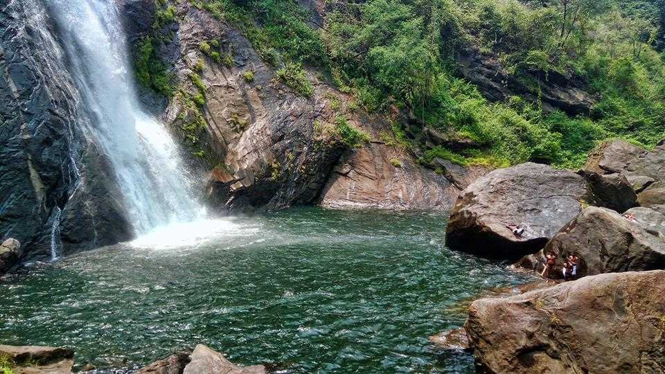
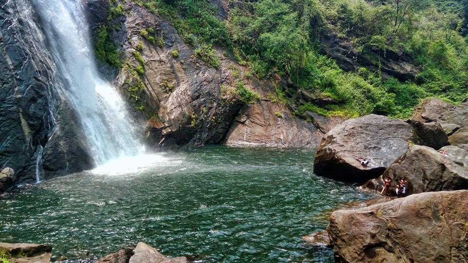

Poonjar Palace Poonjar Palace |
 Ilaveezhapoonchira Ilaveezhapoonchira |
 Illikkal Kallu Illikkal Kallu |
| Marmala Waterfalls | Kaviyoor Mahadeva Temple | Nadukani |
| Poonjar Palace |
Ilaveezhapoonchira |
Illikkal Kallu |
| Marmala Waterfalls | Kaviyoor Mahadeva Temple | Nadukani |